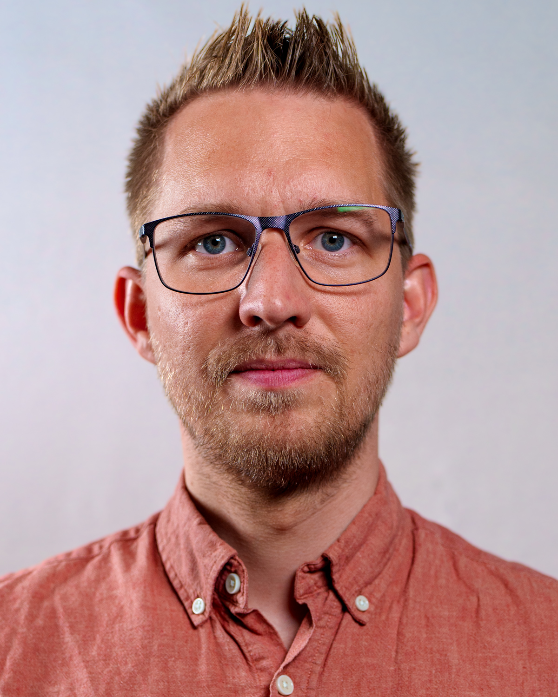

<div id="aboutSection">
  <div class="mainContent">
    <h1>Truls Aagedal</h1>
    
    <div class="aboutText">
      <h2>About me</h2>
      <p>
        I am a photojournalist, documentary film director, technology
        enthusiast, hobbyist programmer. Proponent of meditation, Content
        Credentials and HDR video and images.
      </p>
      <p>
        Born and currently living in Norway. Worked several years as a camera
        operator, video editor, and photojournalist for the two largest
        TV-broadcasters in Norway; NRK and TV 2. Right now working for the
        latter as a photojournalist and chief photo editor.
      </p>
      <p>
        Also made a few documentaries, music videos, and short films. I have a
        bachelor's degree in documentary film production, and another bachelor's
        degree in film and television studies.
      </p>
      <p>
        When I'm not filling my hard drives with pictures, I spend a lot of time
        reading about technology or playing video games. I also like swimming
        and going for walks, but only when the weather looks good.
      </p>
      <p>
        My GitHub repositories can be found
        <a href="https://github.com/aagedal">here</a>.
      </p>
    </div>
  </div>
</div>
